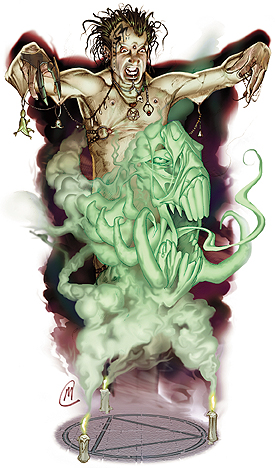

邪恶之书・进阶职业・恶魔大师（Demonologist）

专门研究恶魔的凡人被称为恶魔大师。他们善于对抗恶魔，利用他们为自己服务。在经过多年和恶魔共渡的岁月后，他们甚至掌握了些许恶魔独特的力量。恶魔大师常常并不认为自己站在邪恶一方，不过俗话说的好，近朱者赤，近墨者黑。
大多数恶魔大师都曾经是法师或术士，但专门研究邪恶轶闻的吟游诗人也有时会走上这条道路。
恶魔大师把自己看作秘密知识的研究者和守护者，常常隐居在图书馆或是研究室中。他们醉心于同恶魔进行较量而很少与凡人往来～这可不是个安全的行当。但当恶魔大师发现自己有什么特殊需要的时候，他们也会暂时停止研究，靠着自己黑暗的力量为所欲为，然后再回归到书卷以及召唤法阵中。恶魔大师可能会需要玩家的知识或是魔法物品，这通常是事情的导火索，而玩家在对抗恶魔前，也有可能会需要恶魔大师的帮助和指导。
生命骰：d4
需求：想要成为一名魔鬼大师，角色必须满足以下条件：
阵营：混乱邪恶
技能：知识（奥术）4级，知识（界域）8级
专长：邪恶烙印，精通活祭，邪恶法术专攻
特殊：角色必须能够施展起码6种咒法系法术，而且其中一项法术必须为3级或更高。
本职技能：炼金（智力），唬骗（魅力），专注（体质），文书解读（智力），伪造文书（智力），威吓（魅力），知识（奥术）（智力），知识（界域）（智力），知识（宗教）（智力），骑乘（敏捷），探知（智力），观言察色（感知），法术辨识（智力）
每等级技能点数：4+智力调整值
表5-3 魔鬼大师
等级 基础攻击加值 坚韧豁免 反射豁免 意志豁免 特殊 每日法术
１级 ２级 ３级 ４级
1 +0 +0 +0 +2 媚惑恶魔 1 -- -- --
2 +1 +0 +0 +3 魔宠：夸塞魔 1 1 -- --
3 +1 +1 +1 +3 精通召唤+2 2 1 1 --
4 +2 +1 +1 +4 元素抗力 2 2 1 1
5 +2 +1 +1 +4 毒素免疫 3 2 2 1
6 +3 +2 +2 +5 精通召唤+3 3 3 2 2
7 +3 +2 +2 +5 定身恶魔 3 3 3 2
8 +4 +2 +2 +6 心灵沟通 4 3 3 3
9 +4 +3 +3 +6 精通召唤+4 4 4 3 3
10 +5 +3 +3 +7 控制恶魔 4 4 4 3
职业特性：
擅长武器及防具：魔鬼大师不擅长任何武器，防具以及盔甲。
法术：1级开始，恶魔大师可施展某些奥术。若要施法，恶魔大师的魅力值必须达10+该法术等级，魅力值等于或低于10的恶魔大师不能施法。恶魔大师的额外法术依魅力值计算。法术的豁免检定DC=10+法术等级+恶魔大师的魅力调整值（若有）。恶魔大师的法术列表参见后述。恶魔大师可以随意选择法术列表中的法术，并不需先前进行准备，如同术士。恶魔大师在施法时视为术士。
媚惑恶魔（SP）：从1级起，恶魔大师可以每日一次尝试媚惑一名混乱邪恶的外界生物，如同法术“媚惑人类”。本能力无视恶魔的法术抗力，但恶魔仍可依正常规则进行豁免（DC 11+恶魔大师的魅力调整值）
夸塞魔魔宠（EX）：当恶魔大师达到2级时，自动获得一名夸塞魔作为自己的魔宠。若恶魔大师已经拥有了魔宠，那么夸塞魔将吞噬那名魔宠并取代它的位置。夸塞魔的数值按照正常情况处理，但使用恶魔大师的等级作为巫师等级。
精通召唤（SU）：当3级以上的恶魔大师施展“怪物召唤术”召唤混乱邪恶的生物时，视作高两级的同类魔法。例如，一名恶魔大师施展“二级怪物召唤术”召唤混乱邪恶的外界生物时，视作施展“四级怪物召唤术”。当恶魔大师达到6级后，“怪物召唤术”的有效等级得到+3的奖励。当恶魔大师达到9级后，这种奖励提高到+4。
元素抗力（SU）：一名4级以上的恶魔大师获得10点酸液抗力，10电寒冷抗力，以及20点闪电抗力。
毒素免疫（EX）：5级以上的恶魔大师对毒素免疫。
定身恶魔（SP）：一名7级以上的恶魔大师可以每日一次尝试定身一名混乱邪恶的外界生物，如同法术“人类定身术”。本能力无视恶魔的法术抗力，但恶魔仍可依正常规则进行豁免（DC 12+恶魔大师的魅力调整值）
心灵沟通（SU）：一名8级以上的恶魔大师可以与周围100尺内任何有语言的智能生物进行心灵沟通，如同塔那里人。
控制恶魔（SP）：一名10级的恶魔大师可以每日一次尝试控制一名混乱邪恶的外界生物，如同法术“控制人类”。本能力无视恶魔的法术抗力，但恶魔仍可依正常规则进行豁免（DC 15+恶魔大师的魅力调整值）
恶魔大师法术列表：
1级：绝望术，恶魔皮肤（Demonflesh），丧志术，防护邪恶，防护善良，弗洛魔爆雾术（Spores of the Vrock），一级怪物召唤术，胆怯凝视
2级：降咒术，毁灭之舞，恶魔知识（Demon Call），反邪恶法阵，反善良法阵，防护元素伤害，震耳尖叫，二级怪物召唤术
3级：深渊之力（Abyssal Might），攫屈魔群召唤术（Call Dretch Horde），腐化召唤（Corrupt Summons），恶魔之翼（Demon Wings），恐惧之字（Dread Word），次元锚，次级异界誓盟，三级怪物召唤术
4级：强力降咒术，召唤梦魇（Call Nightmare），鹦哥兽之云（Cloud of the Achaierai），驱逐术，驱散附身者（Impotent Possessor），囚禁附身者（Imprison Possessor），异界誓盟，四级怪物召唤术